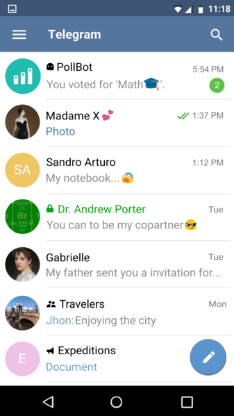
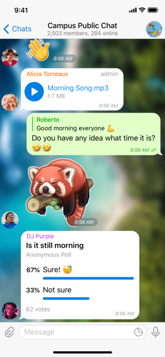

| Дата | Событие |
|---|---|
| 14 августа 2013 | Официальный запуск Telegram для iOS |
| 20 октября 2013 | Версия Telegram для Android |
| Сентябрь 2015 | Запуск Telegram Channels |
| Апрель 2016 | Официальный запуск Telegram Bots и Bot API |
| Июнь 2017 | Добавление аудиосообщений |
| Август 2020 | Запуск групповых видеозвонков |
| Декабрь 2021 | Функция автоматического удаления сообщений |
| Июнь 2022 | Запуск Telegram Premium |
| Сентябрь 2023 | Цитирование в ответах и расширенное форматирование текста |
Telegram (от др.-греч. τῆλε — далеко и γράμμα — запись) — кроссплатформенный мессенджер. Основан в 2013 году Павлом и Николаем Дуровыми[6][7]. Приложение позволяет обмениваться текстовыми, голосовыми и видеосообщениями, а также стикерами, фотографиями и файлами многих форматов[8]. Также позволяет совершать аудио- и видеозвонки, организовывать конференции и прямые эфиры, хранить неограниченное количество файлов, вести каналы (микроблоги), создавать и использовать ботов. Приложения Telegram доступны для Android, iOS, Windows, macOS и Linux[9].
Telegram — самое популярное приложение для обмена мгновенными сообщениями в некоторых странах Европы, Азии и Африки.
По словам Павла Дурова, на начало 2023 года Telegram стал вторым после WhatsApp мессенджером в мире по популярности[10].
По состоянию на июль 2024 года Telegram насчитывает более 950 миллионов ежемесячных активных пользователей[11],
по количеству пользователей лидирует Индия[12]. Серверы Telegram расположены по всему миру в нескольких дата-центрах,
а штаб-квартира находится в Дубае, Объединённые Арабские Эмираты.
Павел Дуров, активно выступающий за свободу интернета, утверждает,
что Telegram имеет высокую степень конфиденциальности данных.
По оценкам СМИ, такая политика конфиденциальности привлекла в Telegram террористов, экстремистов,
мошенников, торговцев оружием и наркотиками. По данным Surfshark, всего Telegram временно или бессрочно
блокировали в 31 стране[13]. Расследование, связанное с организованной преступностью в Telegram стало причиной
уголовного преследования Павла Дурова во Франции в 2024 году.

